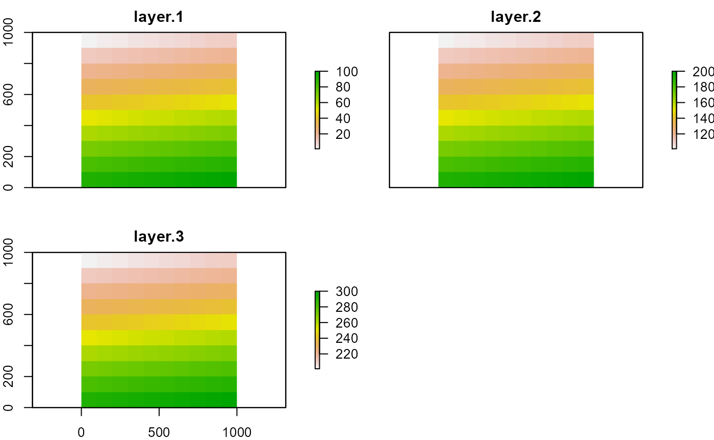
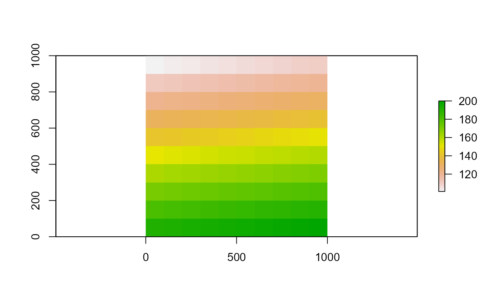
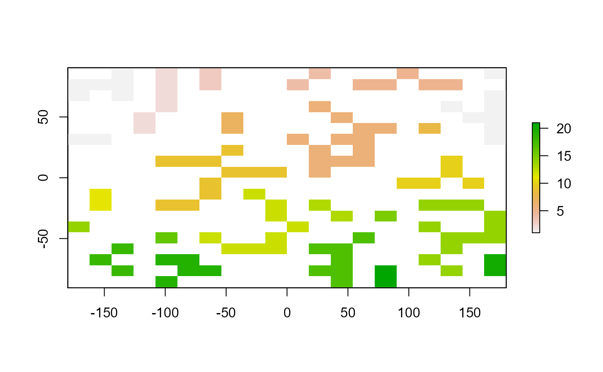
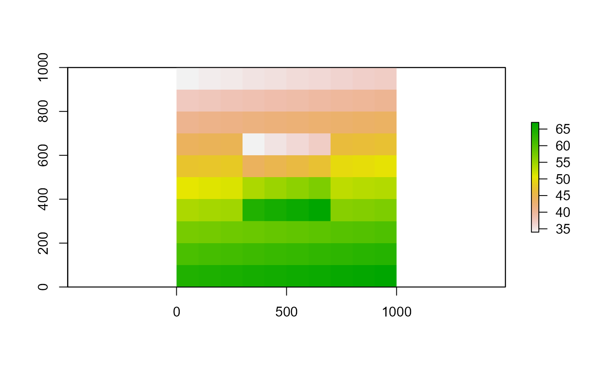
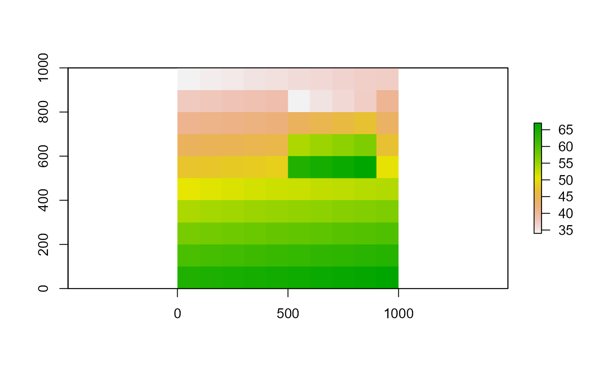
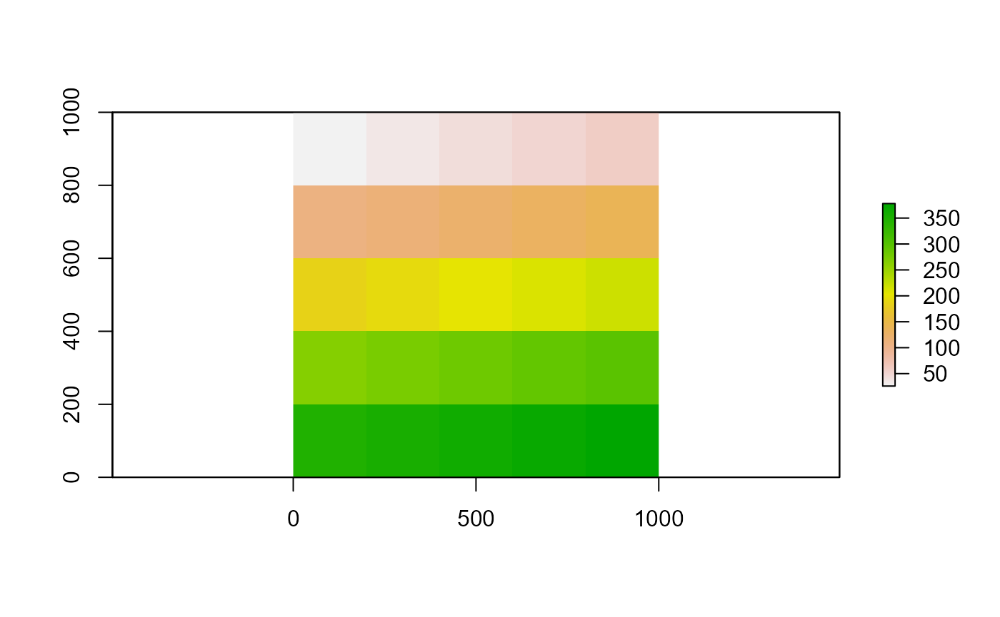
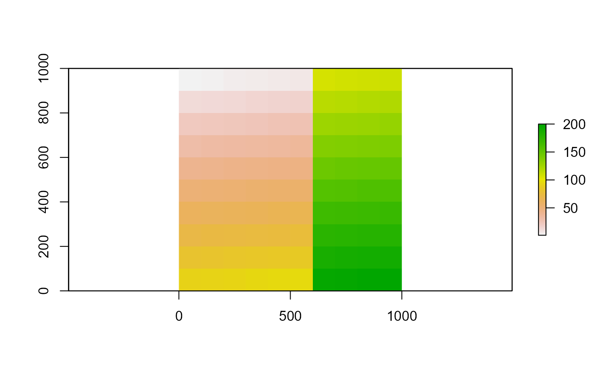
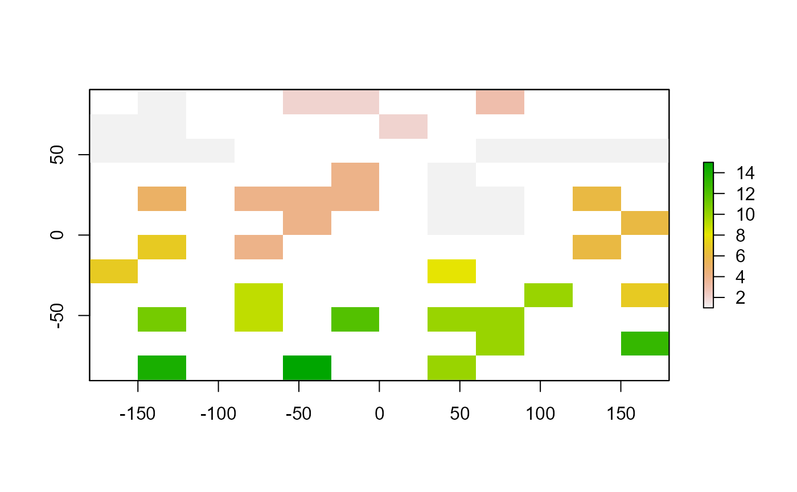
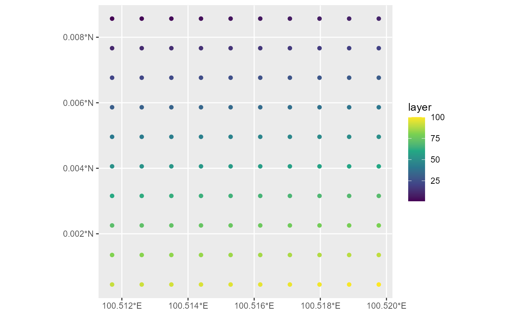
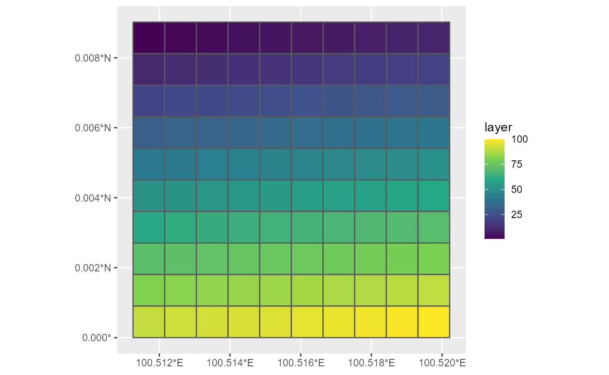

Raster package tutorial notes
Source:vignettes/raster_package_tutorial_notes.Rmd
raster_package_tutorial_notes.RmdTutorials taken from The Raster package by Robert J. Hijmans
suppressPackageStartupMessages({
# reading, writing, manipulating, analyzing and modeling of gridded spatial data
library(raster)
# simple features spatial vector data
library(sf)
# creating graphics based on Grammar of Graphics
library(ggplot2)
})
# represent large satellite image collections as regular raster data cubes with
# dimensions bands, time, y and x
# library(gdalcubes)
# reading, manipulating, plotting and writing spatiotemporal data array cubes
# library(stars)
rasterOptions()
#> format : raster
#> datatype : FLT4S
#> overwrite : FALSE
#> progress : none
#> timer : FALSE
#> chunksize : 1e+08
#> maxmemory : 5e+09
#> memfrac : 0.6
#> tmpdir : C:\Users\GRAHAM~1\AppData\Local\Temp\Rtmp0oXLAb/raster/
#> tmptime : 168
#> setfileext : TRUE
#> tolerance : 0.1
#> standardnames : TRUE
#> warn depracat.: TRUE
#> header : nonedefault options can be changed using raster::rasterOptions
raster files can also be imported using the raster::raster function
the values associated with the RasterLayer are lost if you change the number of rows or columns or cell resolution, but not if the extent is changed as this does not change the number of cells, only the cell resolution
cells numbered by row from upper left to bottom right of the raster
Raster layer
create raster
r1 <- raster(ncol = 10, nrow = 10, xmn = 0, xmx = 1000, ymn = 0, ymx = 1000)
r1
#> class : RasterLayer
#> dimensions : 10, 10, 100 (nrow, ncol, ncell)
#> resolution : 100, 100 (x, y)
#> extent : 0, 1000, 0, 1000 (xmin, xmax, ymin, ymax)
#> crs : NA
#change resolution
res(r1) <- 200
r1
#> class : RasterLayer
#> dimensions : 5, 5, 25 (nrow, ncol, ncell)
#> resolution : 200, 200 (x, y)
#> extent : 0, 1000, 0, 1000 (xmin, xmax, ymin, ymax)
#> crs : NA
# change number of rows and columns
ncol(r1) <- 10
nrow(r1) <- 10
r1
#> class : RasterLayer
#> dimensions : 10, 10, 100 (nrow, ncol, ncell)
#> resolution : 100, 100 (x, y)
#> extent : 0, 1000, 0, 1000 (xmin, xmax, ymin, ymax)
#> crs : NA
# set coordinate reference system
projection(r1) <- "+proj=utm +zone=48 +datum=WGS84"
r1
#> class : RasterLayer
#> dimensions : 10, 10, 100 (nrow, ncol, ncell)
#> resolution : 100, 100 (x, y)
#> extent : 0, 1000, 0, 1000 (xmin, xmax, ymin, ymax)
#> crs : +proj=utm +zone=48 +datum=WGS84 +units=m +no_defs
# add cell values
values(r1) <- 1:ncell(r1)
as.matrix(r1)
#> [,1] [,2] [,3] [,4] [,5] [,6] [,7] [,8] [,9] [,10]
#> [1,] 1 2 3 4 5 6 7 8 9 10
#> [2,] 11 12 13 14 15 16 17 18 19 20
#> [3,] 21 22 23 24 25 26 27 28 29 30
#> [4,] 31 32 33 34 35 36 37 38 39 40
#> [5,] 41 42 43 44 45 46 47 48 49 50
#> [6,] 51 52 53 54 55 56 57 58 59 60
#> [7,] 61 62 63 64 65 66 67 68 69 70
#> [8,] 71 72 73 74 75 76 77 78 79 80
#> [9,] 81 82 83 84 85 86 87 88 89 90
#> [10,] 91 92 93 94 95 96 97 98 99 100
r1
#> class : RasterLayer
#> dimensions : 10, 10, 100 (nrow, ncol, ncell)
#> resolution : 100, 100 (x, y)
#> extent : 0, 1000, 0, 1000 (xmin, xmax, ymin, ymax)
#> crs : +proj=utm +zone=48 +datum=WGS84 +units=m +no_defs
#> source : memory
#> names : layer
#> values : 1, 100 (min, max)
plot(r1, main = 'Raster with 100 cells')freq
- get the counts of each cell value
freq(r1)[1:5, ]
#> value count
#> [1,] 1 1
#> [2,] 2 1
#> [3,] 3 1
#> [4,] 4 1
#> [5,] 5 1projectExtent
- Create an empty raster copy with no values
r <- projectExtent(r1, crs = crs(r1))
r
#> class : RasterLayer
#> dimensions : 10, 10, 100 (nrow, ncol, ncell)
#> resolution : 100, 100 (x, y)
#> extent : 0, 1000, 0, 1000 (xmin, xmax, ymin, ymax)
#> crs : +proj=utm +zone=48 +datum=WGS84 +units=m +no_defsExplore raster cells
as.matrix(r1)
#> [,1] [,2] [,3] [,4] [,5] [,6] [,7] [,8] [,9] [,10]
#> [1,] 1 2 3 4 5 6 7 8 9 10
#> [2,] 11 12 13 14 15 16 17 18 19 20
#> [3,] 21 22 23 24 25 26 27 28 29 30
#> [4,] 31 32 33 34 35 36 37 38 39 40
#> [5,] 41 42 43 44 45 46 47 48 49 50
#> [6,] 51 52 53 54 55 56 57 58 59 60
#> [7,] 61 62 63 64 65 66 67 68 69 70
#> [8,] 71 72 73 74 75 76 77 78 79 80
#> [9,] 81 82 83 84 85 86 87 88 89 90
#> [10,] 91 92 93 94 95 96 97 98 99 100
# check if raster has values
hasValues(r1)
#> [1] TRUE
# check if raster values stored in memory
inMemory(r1)
#> [1] TRUE
# dimensions
dim(r1)
#> [1] 10 10 1
# number of columns
ncol(r1)
#> [1] 10
# number of rows
nrow(r1)
#> [1] 10
# which row contains the cell number
rowFromCell(r1, 45)
#> [1] 5
# which column contains the cell number
colFromCell(r1, 45)
#> [1] 5
# what are the x and y coordinates for cell number
xyFromCell(r1, 45)
#> x y
#> [1,] 450 550
# what cell number is at coordinates x and y
cellFromXY(r1, c(450, 550))
#> [1] 45
# what column number is at coordinate x
colFromX(r1, 450)
#> [1] 5
# what row number is at coordinate y
rowFromY(r1, 550)
#> [1] 5Raster stack
- A raster stack can be formed from multiple files or a few bands from a single file
r2 <- r3 <- r1
values(r2) <- 101:200
as.matrix(r2)
#> [,1] [,2] [,3] [,4] [,5] [,6] [,7] [,8] [,9] [,10]
#> [1,] 101 102 103 104 105 106 107 108 109 110
#> [2,] 111 112 113 114 115 116 117 118 119 120
#> [3,] 121 122 123 124 125 126 127 128 129 130
#> [4,] 131 132 133 134 135 136 137 138 139 140
#> [5,] 141 142 143 144 145 146 147 148 149 150
#> [6,] 151 152 153 154 155 156 157 158 159 160
#> [7,] 161 162 163 164 165 166 167 168 169 170
#> [8,] 171 172 173 174 175 176 177 178 179 180
#> [9,] 181 182 183 184 185 186 187 188 189 190
#> [10,] 191 192 193 194 195 196 197 198 199 200
values(r3) <- 201:300
as.matrix(r3)
#> [,1] [,2] [,3] [,4] [,5] [,6] [,7] [,8] [,9] [,10]
#> [1,] 201 202 203 204 205 206 207 208 209 210
#> [2,] 211 212 213 214 215 216 217 218 219 220
#> [3,] 221 222 223 224 225 226 227 228 229 230
#> [4,] 231 232 233 234 235 236 237 238 239 240
#> [5,] 241 242 243 244 245 246 247 248 249 250
#> [6,] 251 252 253 254 255 256 257 258 259 260
#> [7,] 261 262 263 264 265 266 267 268 269 270
#> [8,] 271 272 273 274 275 276 277 278 279 280
#> [9,] 281 282 283 284 285 286 287 288 289 290
#> [10,] 291 292 293 294 295 296 297 298 299 300
s <- stack(r1, r2, r3)
nlayers(s)
#> [1] 3
s
#> class : RasterStack
#> dimensions : 10, 10, 100, 3 (nrow, ncol, ncell, nlayers)
#> resolution : 100, 100 (x, y)
#> extent : 0, 1000, 0, 1000 (xmin, xmax, ymin, ymax)
#> crs : +proj=utm +zone=48 +datum=WGS84 +units=m +no_defs
#> names : layer.1, layer.2, layer.3
#> min values : 1, 101, 201
#> max values : 100, 200, 300
plot(s)
subset
- extracts a raster layer from a raster stack
r <- subset(s, 1)
as.matrix(r)
#> [,1] [,2] [,3] [,4] [,5] [,6] [,7] [,8] [,9] [,10]
#> [1,] 1 2 3 4 5 6 7 8 9 10
#> [2,] 11 12 13 14 15 16 17 18 19 20
#> [3,] 21 22 23 24 25 26 27 28 29 30
#> [4,] 31 32 33 34 35 36 37 38 39 40
#> [5,] 41 42 43 44 45 46 47 48 49 50
#> [6,] 51 52 53 54 55 56 57 58 59 60
#> [7,] 61 62 63 64 65 66 67 68 69 70
#> [8,] 71 72 73 74 75 76 77 78 79 80
#> [9,] 81 82 83 84 85 86 87 88 89 90
#> [10,] 91 92 93 94 95 96 97 98 99 100Raster brick
A raster brick can only be linked to a single multi-layer file
Can read a raster brick from file using raster::brick function
b <- brick(r1, r2, r3)
# b <- brick(s)
nlayers(b)
#> [1] 3
b
#> class : RasterBrick
#> dimensions : 10, 10, 100, 3 (nrow, ncol, ncell, nlayers)
#> resolution : 100, 100 (x, y)
#> extent : 0, 1000, 0, 1000 (xmin, xmax, ymin, ymax)
#> crs : +proj=utm +zone=48 +datum=WGS84 +units=m +no_defs
#> source : memory
#> names : layer.1, layer.2, layer.3
#> min values : 1, 101, 201
#> max values : 100, 200, 300
plot(b)- Can import a single raster layer directly from a multibanded raster, eg band 2 using raster::raster(filename, band = 2)
# Extract a raster layer from a raster brick
r2 <- raster(b, layer = 2)
r2
#> class : RasterLayer
#> dimensions : 10, 10, 100 (nrow, ncol, ncell)
#> resolution : 100, 100 (x, y)
#> extent : 0, 1000, 0, 1000 (xmin, xmax, ymin, ymax)
#> crs : +proj=utm +zone=48 +datum=WGS84 +units=m +no_defs
#> source : memory
#> names : layer.2
#> values : 101, 200 (min, max)
plot(r2)
Vector to Raster layer
rasterize
converts points, lines or polygons attribute values to raster cells. For polygons values transferred if polygon covers centre of raster cell, for line to all raster cells touched by line and for points within a raster cell. Select values to transfer to defined raster object. Resulting multiple raster values are summarised by applied function, eg min
fasterize package can be used as a quicker method to rasterize polygons provided as sf objects
Extract cell values
- extracts subset of raster using matrix indexing and drop = FALSE. Less efficient than accessing values by raster::getValues function
r <- r1[1:3, 1:3, drop = FALSE] # row number, column number
r
#> class : RasterLayer
#> dimensions : 3, 3, 9 (nrow, ncol, ncell)
#> resolution : 100, 100 (x, y)
#> extent : 0, 300, 700, 1000 (xmin, xmax, ymin, ymax)
#> crs : +proj=utm +zone=48 +datum=WGS84 +units=m +no_defs
#> source : memory
#> names : layer
#> values : 1, 23 (min, max)
as.matrix(r)
#> [,1] [,2] [,3]
#> [1,] 1 2 3
#> [2,] 11 12 13
#> [3,] 21 22 23extract
- extract cell values using polygons or lines where polygon covers centre of cell or line crosses cell. If use weights = TRUE then also outputs percentage of each cell covered by polygon and can apply summary function
extract(r1, y = 12) # what cell value occurs at cell number(s)
#> [1] 12
# extract(r1, y = sf object, weights = TRUE) # polygon or line vectorgetValues
- get all values for a single row
# get cell values from row number
getValues(r1, 5)
#> [1] 41 42 43 44 45 46 47 48 49 50getValuesBlock
- get all values for a block of cells
as.matrix(r1)
#> [,1] [,2] [,3] [,4] [,5] [,6] [,7] [,8] [,9] [,10]
#> [1,] 1 2 3 4 5 6 7 8 9 10
#> [2,] 11 12 13 14 15 16 17 18 19 20
#> [3,] 21 22 23 24 25 26 27 28 29 30
#> [4,] 31 32 33 34 35 36 37 38 39 40
#> [5,] 41 42 43 44 45 46 47 48 49 50
#> [6,] 51 52 53 54 55 56 57 58 59 60
#> [7,] 61 62 63 64 65 66 67 68 69 70
#> [8,] 71 72 73 74 75 76 77 78 79 80
#> [9,] 81 82 83 84 85 86 87 88 89 90
#> [10,] 91 92 93 94 95 96 97 98 99 100
getValuesBlock(r1, row = 4, nrows = 3, col = 4, ncols = 3)
#> [1] 34 35 36 44 45 46 54 55 56Summarise cell values
cellStats
- summary statistic of cell values
# apply summary function within each raster layer in a raster stack
cellStats(r1, sum)
#> [1] 5050zonal
- calculate zonal statistics summarising cell values for each zone defined by a raster layer
r <- projectExtent(r1, crs = crs(r1))
values(r) <- rep(1:10, 10)
as.matrix(r)
#> [,1] [,2] [,3] [,4] [,5] [,6] [,7] [,8] [,9] [,10]
#> [1,] 1 2 3 4 5 6 7 8 9 10
#> [2,] 1 2 3 4 5 6 7 8 9 10
#> [3,] 1 2 3 4 5 6 7 8 9 10
#> [4,] 1 2 3 4 5 6 7 8 9 10
#> [5,] 1 2 3 4 5 6 7 8 9 10
#> [6,] 1 2 3 4 5 6 7 8 9 10
#> [7,] 1 2 3 4 5 6 7 8 9 10
#> [8,] 1 2 3 4 5 6 7 8 9 10
#> [9,] 1 2 3 4 5 6 7 8 9 10
#> [10,] 1 2 3 4 5 6 7 8 9 10
rz <- zonal(r1, r, fun = 'max')
rz
#> zone max
#> [1,] 1 91
#> [2,] 2 92
#> [3,] 3 93
#> [4,] 4 94
#> [5,] 5 95
#> [6,] 6 96
#> [7,] 7 97
#> [8,] 8 98
#> [9,] 9 99
#> [10,] 10 100Modify raster values
calc
- calculate values from a raster layer
r <- r1 * 2
r <- calc(r1, fun = function(x){x * 2})
as.matrix(r)
#> [,1] [,2] [,3] [,4] [,5] [,6] [,7] [,8] [,9] [,10]
#> [1,] 2 4 6 8 10 12 14 16 18 20
#> [2,] 22 24 26 28 30 32 34 36 38 40
#> [3,] 42 44 46 48 50 52 54 56 58 60
#> [4,] 62 64 66 68 70 72 74 76 78 80
#> [5,] 82 84 86 88 90 92 94 96 98 100
#> [6,] 102 104 106 108 110 112 114 116 118 120
#> [7,] 122 124 126 128 130 132 134 136 138 140
#> [8,] 142 144 146 148 150 152 154 156 158 160
#> [9,] 162 164 166 168 170 172 174 176 178 180
#> [10,] 182 184 186 188 190 192 194 196 198 200
r <- r1
f <- function(x) {
x[x == 5] <- NA
return(x)
}
r <- calc(r, f)
as.matrix(r)
#> [,1] [,2] [,3] [,4] [,5] [,6] [,7] [,8] [,9] [,10]
#> [1,] 1 2 3 4 NA 6 7 8 9 10
#> [2,] 11 12 13 14 15 16 17 18 19 20
#> [3,] 21 22 23 24 25 26 27 28 29 30
#> [4,] 31 32 33 34 35 36 37 38 39 40
#> [5,] 41 42 43 44 45 46 47 48 49 50
#> [6,] 51 52 53 54 55 56 57 58 59 60
#> [7,] 61 62 63 64 65 66 67 68 69 70
#> [8,] 71 72 73 74 75 76 77 78 79 80
#> [9,] 81 82 83 84 85 86 87 88 89 90
#> [10,] 91 92 93 94 95 96 97 98 99 100reclassify
- replace ranges of values with single values
r <- reclassify(r1, c(1, 10, 1, 10, 20, 2, 20, 30, 3))
as.matrix(r)
#> [,1] [,2] [,3] [,4] [,5] [,6] [,7] [,8] [,9] [,10]
#> [1,] 1 1 1 1 1 1 1 1 1 1
#> [2,] 2 2 2 2 2 2 2 2 2 2
#> [3,] 3 3 3 3 3 3 3 3 3 3
#> [4,] 31 32 33 34 35 36 37 38 39 40
#> [5,] 41 42 43 44 45 46 47 48 49 50
#> [6,] 51 52 53 54 55 56 57 58 59 60
#> [7,] 61 62 63 64 65 66 67 68 69 70
#> [8,] 71 72 73 74 75 76 77 78 79 80
#> [9,] 81 82 83 84 85 86 87 88 89 90
#> [10,] 91 92 93 94 95 96 97 98 99 100subs
- replace single value with another value. subsWithNA = FALSE does not appear to work so that values that are not replaced are replaced with NA
r <- subs(r1, data.frame(from = c(10, 20), to = c(1, 2),
by = 'from',
which = 'to',
subsWithNA = FALSE))
as.matrix(r)
#> [,1] [,2] [,3] [,4] [,5] [,6] [,7] [,8] [,9] [,10]
#> [1,] NA NA NA NA NA NA NA NA NA 1
#> [2,] NA NA NA NA NA NA NA NA NA 2
#> [3,] NA NA NA NA NA NA NA NA NA NA
#> [4,] NA NA NA NA NA NA NA NA NA NA
#> [5,] NA NA NA NA NA NA NA NA NA NA
#> [6,] NA NA NA NA NA NA NA NA NA NA
#> [7,] NA NA NA NA NA NA NA NA NA NA
#> [8,] NA NA NA NA NA NA NA NA NA NA
#> [9,] NA NA NA NA NA NA NA NA NA NA
#> [10,] NA NA NA NA NA NA NA NA NA NAfocal
- uses values in a neighborhood of cells around a focal cell and computes a value that is stored in the focal cell, for example compute values for NA
r <- raster(ncols = 20, nrows = 20, vals = round(runif(400, 0, 1) * 0.7))
as.matrix(r)
#> [,1] [,2] [,3] [,4] [,5] [,6] [,7] [,8] [,9] [,10] [,11] [,12] [,13]
#> [1,] 1 0 1 0 0 0 0 0 0 1 0 0 1
#> [2,] 0 0 1 0 0 0 0 1 0 0 1 1 0
#> [3,] 0 1 1 0 1 0 0 0 0 0 0 0 0
#> [4,] 0 0 0 0 0 0 0 0 0 0 1 0 1
#> [5,] 0 0 0 1 0 0 1 0 1 0 1 1 0
#> [6,] 0 0 1 1 0 0 1 0 1 0 0 1 0
#> [7,] 0 1 0 0 1 0 1 1 0 0 0 0 0
#> [8,] 0 1 1 0 0 1 0 0 0 0 1 0 0
#> [9,] 0 0 0 0 0 1 0 0 0 0 0 0 1
#> [10,] 0 0 0 0 0 1 0 1 1 1 0 1 1
#> [11,] 0 0 0 0 0 0 0 0 0 0 1 0 1
#> [12,] 0 0 0 0 0 0 0 1 0 1 0 1 0
#> [13,] 0 0 0 0 0 0 1 0 0 0 1 1 0
#> [14,] 0 0 0 0 0 1 0 0 1 1 0 1 0
#> [15,] 0 1 1 0 0 1 1 0 0 1 1 0 0
#> [16,] 1 1 1 0 0 1 1 0 1 0 0 0 0
#> [17,] 0 0 1 0 0 0 0 0 0 0 0 0 0
#> [18,] 0 1 1 0 1 1 0 1 0 1 0 1 1
#> [19,] 1 0 0 1 0 0 1 0 0 0 1 1 0
#> [20,] 1 0 0 0 0 0 0 0 0 1 0 1 0
#> [,14] [,15] [,16] [,17] [,18] [,19] [,20]
#> [1,] 1 0 0 1 0 0 0
#> [2,] 1 0 1 0 0 1 0
#> [3,] 1 1 1 1 0 0 0
#> [4,] 0 0 0 0 0 1 0
#> [5,] 1 0 1 0 0 0 0
#> [6,] 0 1 0 0 1 0 0
#> [7,] 0 0 1 0 0 0 1
#> [8,] 0 1 0 1 0 0 0
#> [9,] 1 0 0 0 0 0 0
#> [10,] 0 0 0 0 1 1 0
#> [11,] 1 0 1 0 0 0 0
#> [12,] 0 0 1 0 0 0 0
#> [13,] 1 0 0 0 0 0 1
#> [14,] 0 0 0 0 0 0 1
#> [15,] 0 0 1 0 0 1 0
#> [16,] 1 0 1 0 0 0 0
#> [17,] 0 0 0 0 0 1 0
#> [18,] 1 0 0 0 0 0 0
#> [19,] 1 0 0 0 0 0 0
#> [20,] 1 0 0 0 0 1 0
rc <- clump(r)
#> Loading required namespace: igraph
as.matrix(rc)
#> [,1] [,2] [,3] [,4] [,5] [,6] [,7] [,8] [,9] [,10] [,11] [,12] [,13]
#> [1,] 1 NA 2 NA NA NA NA NA NA 3 NA NA 3
#> [2,] NA NA 2 NA NA NA NA 4 NA NA 3 3 NA
#> [3,] NA 2 2 NA 6 NA NA NA NA NA NA NA NA
#> [4,] NA NA NA NA NA NA NA NA NA NA 3 NA 3
#> [5,] NA NA NA 8 NA NA 8 NA 8 NA 3 3 NA
#> [6,] NA NA 8 8 NA NA 8 NA 8 NA NA 3 NA
#> [7,] NA 8 NA NA 8 NA 8 8 NA NA NA NA NA
#> [8,] NA 8 8 NA NA 8 NA NA NA NA 11 NA NA
#> [9,] NA NA NA NA NA 8 NA NA NA NA NA NA 3
#> [10,] NA NA NA NA NA 8 NA 3 3 3 NA 3 3
#> [11,] NA NA NA NA NA NA NA NA NA NA 3 NA 3
#> [12,] NA NA NA NA NA NA NA 14 NA 3 NA 3 NA
#> [13,] NA NA NA NA NA NA 14 NA NA NA 3 3 NA
#> [14,] NA NA NA NA NA 14 NA NA 3 3 NA 3 NA
#> [15,] NA 17 17 NA NA 14 14 NA NA 3 3 NA NA
#> [16,] 17 17 17 NA NA 14 14 NA 3 NA NA NA NA
#> [17,] NA NA 17 NA NA NA NA NA NA NA NA NA NA
#> [18,] NA 17 17 NA 17 17 NA 17 NA 21 NA 21 21
#> [19,] 17 NA NA 17 NA NA 17 NA NA NA 21 21 NA
#> [20,] 17 NA NA NA NA NA NA NA NA 21 NA 21 NA
#> [,14] [,15] [,16] [,17] [,18] [,19] [,20]
#> [1,] 3 NA NA 3 NA NA NA
#> [2,] 3 NA 3 NA NA 5 NA
#> [3,] 3 3 3 3 NA NA NA
#> [4,] NA NA NA NA NA 7 NA
#> [5,] 3 NA 3 NA NA NA NA
#> [6,] NA 3 NA NA 9 NA NA
#> [7,] NA NA 3 NA NA NA 10
#> [8,] NA 3 NA 3 NA NA NA
#> [9,] 3 NA NA NA NA NA NA
#> [10,] NA NA NA NA 12 12 NA
#> [11,] 3 NA 13 NA NA NA NA
#> [12,] NA NA 13 NA NA NA NA
#> [13,] 15 NA NA NA NA NA 16
#> [14,] NA NA NA NA NA NA 16
#> [15,] NA NA 18 NA NA 16 NA
#> [16,] 19 NA 18 NA NA NA NA
#> [17,] NA NA NA NA NA 20 NA
#> [18,] 21 NA NA NA NA NA NA
#> [19,] 21 NA NA NA NA NA NA
#> [20,] 21 NA NA NA NA 22 NA
plot(rc)
Modify raster extent
crop
- Take a geographic subset of a larger raster object, providing the extent directly, extracted from a spatial object or dynamically for raster plot using raster::drawExtent.
r <- crop(r1, extent(300, 700, 300, 700))
as.matrix(r)
#> [,1] [,2] [,3] [,4]
#> [1,] 34 35 36 37
#> [2,] 44 45 46 47
#> [3,] 54 55 56 57
#> [4,] 64 65 66 67
r
#> class : RasterLayer
#> dimensions : 4, 4, 16 (nrow, ncol, ncell)
#> resolution : 100, 100 (x, y)
#> extent : 300, 700, 300, 700 (xmin, xmax, ymin, ymax)
#> crs : +proj=utm +zone=48 +datum=WGS84 +units=m +no_defs
#> source : memory
#> names : layer
#> values : 34, 67 (min, max)
plot(r1, legend = FALSE)
plot(r, add = TRUE)
extend
- Extends a raster layer by adding outer rows and columns containing NA values
r <- extend(r, extent(0, 1000, 0, 1000))
as.matrix(r)
#> [,1] [,2] [,3] [,4] [,5] [,6] [,7] [,8] [,9] [,10]
#> [1,] NA NA NA NA NA NA NA NA NA NA
#> [2,] NA NA NA NA NA NA NA NA NA NA
#> [3,] NA NA NA NA NA NA NA NA NA NA
#> [4,] NA NA NA 34 35 36 37 NA NA NA
#> [5,] NA NA NA 44 45 46 47 NA NA NA
#> [6,] NA NA NA 54 55 56 57 NA NA NA
#> [7,] NA NA NA 64 65 66 67 NA NA NA
#> [8,] NA NA NA NA NA NA NA NA NA NA
#> [9,] NA NA NA NA NA NA NA NA NA NA
#> [10,] NA NA NA NA NA NA NA NA NA NA
r
#> class : RasterLayer
#> dimensions : 10, 10, 100 (nrow, ncol, ncell)
#> resolution : 100, 100 (x, y)
#> extent : 0, 1000, 0, 1000 (xmin, xmax, ymin, ymax)
#> crs : +proj=utm +zone=48 +datum=WGS84 +units=m +no_defs
#> source : memory
#> names : layer
#> values : 34, 67 (min, max)trim
- Crops a raster layer by removing outer rows and columns containing NA values
r <- trim(r)
as.matrix(r)
#> [,1] [,2] [,3] [,4]
#> [1,] 34 35 36 37
#> [2,] 44 45 46 47
#> [3,] 54 55 56 57
#> [4,] 64 65 66 67
r
#> class : RasterLayer
#> dimensions : 4, 4, 16 (nrow, ncol, ncell)
#> resolution : 100, 100 (x, y)
#> extent : 300, 700, 300, 700 (xmin, xmax, ymin, ymax)
#> crs : +proj=utm +zone=48 +datum=WGS84 +units=m +no_defs
#> source : memory
#> names : layer
#> values : 34, 67 (min, max)shift
- shifts the location of a raster layer either in the x or y direction
r <- shift(r, dx = 200, dy = 200)
r
#> class : RasterLayer
#> dimensions : 4, 4, 16 (nrow, ncol, ncell)
#> resolution : 100, 100 (x, y)
#> extent : 500, 900, 500, 900 (xmin, xmax, ymin, ymax)
#> crs : +proj=utm +zone=48 +datum=WGS84 +units=m +no_defs
#> source : memory
#> names : layer
#> values : 34, 67 (min, max)
plot(r1, legend = FALSE)
plot(r, add = TRUE)
Modify raster resolution
aggregate
- Changes the cell resolution of a raster layer. Provide a function determining what to do with the grouped cell values (eg mean) when aggregating
r <- aggregate(r1, fact = 2, fun = sum)
as.matrix(r)
#> [,1] [,2] [,3] [,4] [,5]
#> [1,] 26 34 42 50 58
#> [2,] 106 114 122 130 138
#> [3,] 186 194 202 210 218
#> [4,] 266 274 282 290 298
#> [5,] 346 354 362 370 378
r
#> class : RasterLayer
#> dimensions : 5, 5, 25 (nrow, ncol, ncell)
#> resolution : 200, 200 (x, y)
#> extent : 0, 1000, 0, 1000 (xmin, xmax, ymin, ymax)
#> crs : +proj=utm +zone=48 +datum=WGS84 +units=m +no_defs
#> source : memory
#> names : layer
#> values : 26, 378 (min, max)
plot(r)
disaggregate
r <- disaggregate(r, fact = 2)
as.matrix(r)
#> [,1] [,2] [,3] [,4] [,5] [,6] [,7] [,8] [,9] [,10]
#> [1,] 26 26 34 34 42 42 50 50 58 58
#> [2,] 26 26 34 34 42 42 50 50 58 58
#> [3,] 106 106 114 114 122 122 130 130 138 138
#> [4,] 106 106 114 114 122 122 130 130 138 138
#> [5,] 186 186 194 194 202 202 210 210 218 218
#> [6,] 186 186 194 194 202 202 210 210 218 218
#> [7,] 266 266 274 274 282 282 290 290 298 298
#> [8,] 266 266 274 274 282 282 290 290 298 298
#> [9,] 346 346 354 354 362 362 370 370 378 378
#> [10,] 346 346 354 354 362 362 370 370 378 378
r
#> class : RasterLayer
#> dimensions : 10, 10, 100 (nrow, ncol, ncell)
#> resolution : 100, 100 (x, y)
#> extent : 0, 1000, 0, 1000 (xmin, xmax, ymin, ymax)
#> crs : +proj=utm +zone=48 +datum=WGS84 +units=m +no_defs
#> source : memory
#> names : layer
#> values : 26, 378 (min, max)
plot(r)Modify between raster layers
mask
- removes all values from one layer that are NA in another layer
# remove numbers divisible by 10
## create masking raster with TRUE / FALSE values
masking_raster <- r1 %% 10
masking_raster <- masking_raster == 0
as.matrix(masking_raster)
#> [,1] [,2] [,3] [,4] [,5] [,6] [,7] [,8] [,9] [,10]
#> [1,] FALSE FALSE FALSE FALSE FALSE FALSE FALSE FALSE FALSE TRUE
#> [2,] FALSE FALSE FALSE FALSE FALSE FALSE FALSE FALSE FALSE TRUE
#> [3,] FALSE FALSE FALSE FALSE FALSE FALSE FALSE FALSE FALSE TRUE
#> [4,] FALSE FALSE FALSE FALSE FALSE FALSE FALSE FALSE FALSE TRUE
#> [5,] FALSE FALSE FALSE FALSE FALSE FALSE FALSE FALSE FALSE TRUE
#> [6,] FALSE FALSE FALSE FALSE FALSE FALSE FALSE FALSE FALSE TRUE
#> [7,] FALSE FALSE FALSE FALSE FALSE FALSE FALSE FALSE FALSE TRUE
#> [8,] FALSE FALSE FALSE FALSE FALSE FALSE FALSE FALSE FALSE TRUE
#> [9,] FALSE FALSE FALSE FALSE FALSE FALSE FALSE FALSE FALSE TRUE
#> [10,] FALSE FALSE FALSE FALSE FALSE FALSE FALSE FALSE FALSE TRUE
## use masking raster to remove numbers divisible by 10
r <- r1
r[masking_raster] <- NA
as.matrix(r)
#> [,1] [,2] [,3] [,4] [,5] [,6] [,7] [,8] [,9] [,10]
#> [1,] 1 2 3 4 5 6 7 8 9 NA
#> [2,] 11 12 13 14 15 16 17 18 19 NA
#> [3,] 21 22 23 24 25 26 27 28 29 NA
#> [4,] 31 32 33 34 35 36 37 38 39 NA
#> [5,] 41 42 43 44 45 46 47 48 49 NA
#> [6,] 51 52 53 54 55 56 57 58 59 NA
#> [7,] 61 62 63 64 65 66 67 68 69 NA
#> [8,] 71 72 73 74 75 76 77 78 79 NA
#> [9,] 81 82 83 84 85 86 87 88 89 NA
#> [10,] 91 92 93 94 95 96 97 98 99 NA
# mask removes all values in r2 that are NA in r
rm <- mask(r2, r)
as.matrix(rm)
#> [,1] [,2] [,3] [,4] [,5] [,6] [,7] [,8] [,9] [,10]
#> [1,] 101 102 103 104 105 106 107 108 109 NA
#> [2,] 111 112 113 114 115 116 117 118 119 NA
#> [3,] 121 122 123 124 125 126 127 128 129 NA
#> [4,] 131 132 133 134 135 136 137 138 139 NA
#> [5,] 141 142 143 144 145 146 147 148 149 NA
#> [6,] 151 152 153 154 155 156 157 158 159 NA
#> [7,] 161 162 163 164 165 166 167 168 169 NA
#> [8,] 171 172 173 174 175 176 177 178 179 NA
#> [9,] 181 182 183 184 185 186 187 188 189 NA
#> [10,] 191 192 193 194 195 196 197 198 199 NAcover
- replaces NA values in first layer with values from the second layer
as.matrix(rm)
#> [,1] [,2] [,3] [,4] [,5] [,6] [,7] [,8] [,9] [,10]
#> [1,] 101 102 103 104 105 106 107 108 109 NA
#> [2,] 111 112 113 114 115 116 117 118 119 NA
#> [3,] 121 122 123 124 125 126 127 128 129 NA
#> [4,] 131 132 133 134 135 136 137 138 139 NA
#> [5,] 141 142 143 144 145 146 147 148 149 NA
#> [6,] 151 152 153 154 155 156 157 158 159 NA
#> [7,] 161 162 163 164 165 166 167 168 169 NA
#> [8,] 171 172 173 174 175 176 177 178 179 NA
#> [9,] 181 182 183 184 185 186 187 188 189 NA
#> [10,] 191 192 193 194 195 196 197 198 199 NA
rm <- cover(rm, r1)
as.matrix(rm)
#> [,1] [,2] [,3] [,4] [,5] [,6] [,7] [,8] [,9] [,10]
#> [1,] 101 102 103 104 105 106 107 108 109 10
#> [2,] 111 112 113 114 115 116 117 118 119 20
#> [3,] 121 122 123 124 125 126 127 128 129 30
#> [4,] 131 132 133 134 135 136 137 138 139 40
#> [5,] 141 142 143 144 145 146 147 148 149 50
#> [6,] 151 152 153 154 155 156 157 158 159 60
#> [7,] 161 162 163 164 165 166 167 168 169 70
#> [8,] 171 172 173 174 175 176 177 178 179 80
#> [9,] 181 182 183 184 185 186 187 188 189 90
#> [10,] 191 192 193 194 195 196 197 198 199 100overlay
- combines multiple raster layers
st <- overlay(r1, r2, r3, fun = mean)
# can also use summary functions directly
st <- mean(r1, r2, r3) # across raster layers
st <- mean(s) # layers within raster stack
as.matrix(st)
#> [,1] [,2] [,3] [,4] [,5] [,6] [,7] [,8] [,9] [,10]
#> [1,] 101 102 103 104 105 106 107 108 109 110
#> [2,] 111 112 113 114 115 116 117 118 119 120
#> [3,] 121 122 123 124 125 126 127 128 129 130
#> [4,] 131 132 133 134 135 136 137 138 139 140
#> [5,] 141 142 143 144 145 146 147 148 149 150
#> [6,] 151 152 153 154 155 156 157 158 159 160
#> [7,] 161 162 163 164 165 166 167 168 169 170
#> [8,] 171 172 173 174 175 176 177 178 179 180
#> [9,] 181 182 183 184 185 186 187 188 189 190
#> [10,] 191 192 193 194 195 196 197 198 199 200merge
- Merges 2 or more raster layers, with the same resolution and origin into a single raster layer. Overlapping values are taken from the first layer
rl <- crop(r1, extent(0, 600, 0, 1000))
rr <- crop(r2, extent(400, 1000, 0, 1000))
r <- merge(rl, rr)
as.matrix(r)
#> [,1] [,2] [,3] [,4] [,5] [,6] [,7] [,8] [,9] [,10]
#> [1,] 1 2 3 4 5 6 107 108 109 110
#> [2,] 11 12 13 14 15 16 117 118 119 120
#> [3,] 21 22 23 24 25 26 127 128 129 130
#> [4,] 31 32 33 34 35 36 137 138 139 140
#> [5,] 41 42 43 44 45 46 147 148 149 150
#> [6,] 51 52 53 54 55 56 157 158 159 160
#> [7,] 61 62 63 64 65 66 167 168 169 170
#> [8,] 71 72 73 74 75 76 177 178 179 180
#> [9,] 81 82 83 84 85 86 187 188 189 190
#> [10,] 91 92 93 94 95 96 197 198 199 200
r
#> class : RasterLayer
#> dimensions : 10, 10, 100 (nrow, ncol, ncell)
#> resolution : 100, 100 (x, y)
#> extent : 0, 1000, 0, 1000 (xmin, xmax, ymin, ymax)
#> crs : +proj=utm +zone=48 +datum=WGS84 +units=m +no_defs
#> source : memory
#> names : layer
#> values : 1, 200 (min, max)
plot(r)
resample
- transfers values between cells within non-matching raster layers, using nearest heighbour for categorical data and bilinear interpolation for numerical data
r <- projectExtent(r1, crs = crs(r1))
r <- resample(r1, r, method = 'bilinear')
as.matrix(r)
#> [,1] [,2] [,3] [,4] [,5] [,6] [,7] [,8] [,9] [,10]
#> [1,] 1 2 3 4 5 6 7 8 9 10
#> [2,] 11 12 13 14 15 16 17 18 19 20
#> [3,] 21 22 23 24 25 26 27 28 29 30
#> [4,] 31 32 33 34 35 36 37 38 39 40
#> [5,] 41 42 43 44 45 46 47 48 49 50
#> [6,] 51 52 53 54 55 56 57 58 59 60
#> [7,] 61 62 63 64 65 66 67 68 69 70
#> [8,] 71 72 73 74 75 76 77 78 79 80
#> [9,] 81 82 83 84 85 86 87 88 89 90
#> [10,] 91 92 93 94 95 96 97 98 99 100
r
#> class : RasterLayer
#> dimensions : 10, 10, 100 (nrow, ncol, ncell)
#> resolution : 100, 100 (x, y)
#> extent : 0, 1000, 0, 1000 (xmin, xmax, ymin, ymax)
#> crs : +proj=utm +zone=48 +datum=WGS84 +units=m +no_defs
#> source : memory
#> names : layer
#> values : 1, 100 (min, max)
plot(r)
Identify value patterns
clump
- identifies groups of cells that are connected with the same values
r <- raster(ncols = 12, nrows = 12, vals = round(runif(144, 0, 1) * 0.7))
as.matrix(r)
#> [,1] [,2] [,3] [,4] [,5] [,6] [,7] [,8] [,9] [,10] [,11] [,12]
#> [1,] 1 0 0 0 0 0 0 1 0 1 0 0
#> [2,] 0 1 0 0 0 0 1 0 0 0 0 0
#> [3,] 0 0 0 0 0 0 0 0 0 1 0 0
#> [4,] 0 0 0 0 1 0 0 0 0 1 0 0
#> [5,] 0 0 0 1 1 0 0 0 0 0 0 0
#> [6,] 0 1 0 0 0 0 0 1 0 0 1 0
#> [7,] 0 0 0 1 1 0 0 0 0 0 0 1
#> [8,] 0 0 0 0 1 0 0 0 1 0 0 0
#> [9,] 0 0 0 0 0 1 1 1 0 0 1 0
#> [10,] 0 0 0 0 0 0 0 1 0 0 0 0
#> [11,] 0 1 0 0 1 0 0 0 0 1 1 1
#> [12,] 0 1 0 0 0 0 1 1 0 0 0 0
rc <- clump(r)
as.matrix(rc)
#> [,1] [,2] [,3] [,4] [,5] [,6] [,7] [,8] [,9] [,10] [,11] [,12]
#> [1,] 1 NA NA NA NA NA NA 2 NA 3 NA NA
#> [2,] NA 1 NA NA NA NA 2 NA NA NA NA NA
#> [3,] NA NA NA NA NA NA NA NA NA 4 NA NA
#> [4,] NA NA NA NA 5 NA NA NA NA 4 NA NA
#> [5,] NA NA NA 5 5 NA NA NA NA NA NA NA
#> [6,] NA 6 NA NA NA NA NA 7 NA NA 8 NA
#> [7,] NA NA NA 9 9 NA NA NA NA NA NA 8
#> [8,] NA NA NA NA 9 NA NA NA 9 NA NA NA
#> [9,] NA NA NA NA NA 9 9 9 NA NA 10 NA
#> [10,] NA NA NA NA NA NA NA 9 NA NA NA NA
#> [11,] NA 11 NA NA 12 NA NA NA NA 13 13 13
#> [12,] NA 11 NA NA NA NA 14 14 NA NA NA NA
plot(rc)
Raster to Vector layer
rasterToPoints
- convert raster cell values to centre of cell points
pt <- rasterToPoints(r1, spatial = TRUE)
pt <- st_as_sf(pt)
ggplot(pt, aes(color = layer)) +
geom_sf() +
scale_color_viridis_c()
rasterToPolygons
- converts raster cell values to polygons with option of dissolving polygons with same cell values
py <- rasterToPolygons(r1)
py <- st_as_sf(py)
ggplot(py, aes(fill = layer)) +
geom_sf() +
scale_fill_viridis_c()